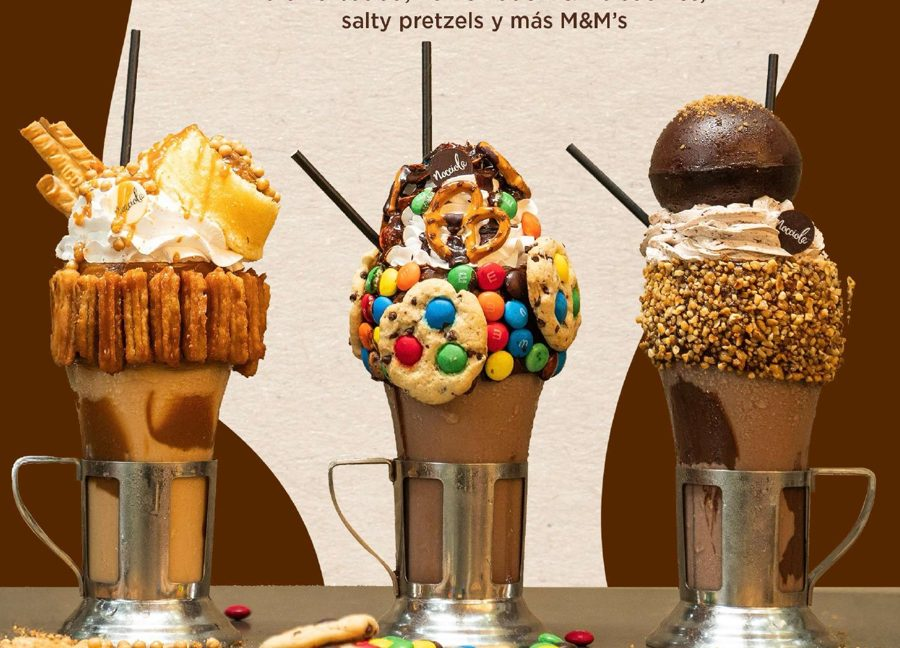
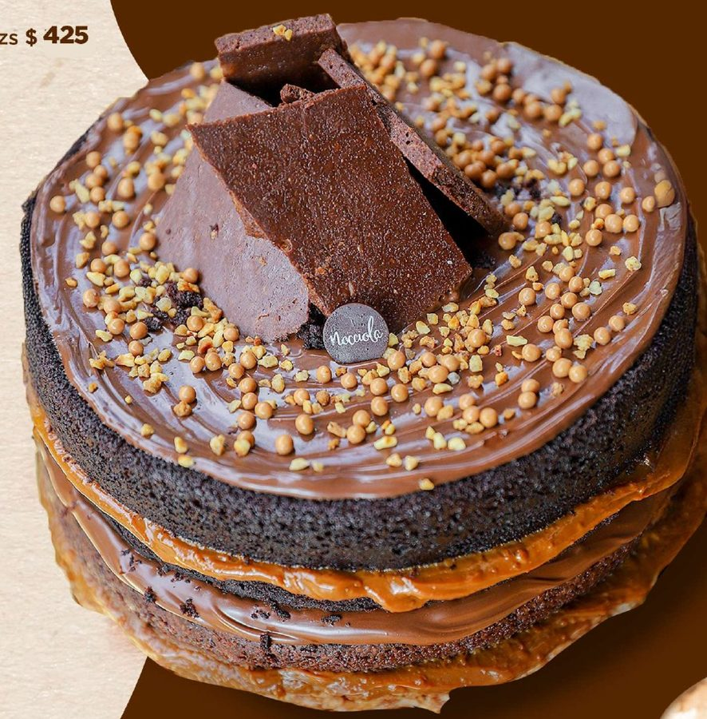
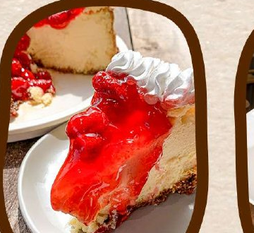
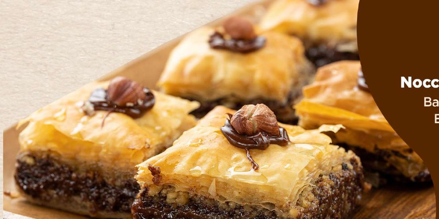

Nuestros Deliciosos Servicios

Pastel "Phoenix" de Chocolate
Un clásico que renace con un sabor irresistible. ¡Perfecto para celebrar cualquier ocasión!

Tarta "Glitch" de Frutas Frescas
Una explosión de color y sabor, con frutas de temporada y una base crujiente.

Macarons "Pixelados"
Pequeñas joyas de sabor en una variedad de colores vibrantes, con rellenos sorprendentes.
Nuestra Resurrección
Tras el enigmático incidente digital, hemos aprovechado la oportunidad para reinventarnos. Hemos adoptado nuevas tecnologías y un diseño fresco para ofrecerte una experiencia aún más dulce y segura. ¡Nocciola está de vuelta, más fuerte y deliciosa que nunca!
Lee nuestra historia completa